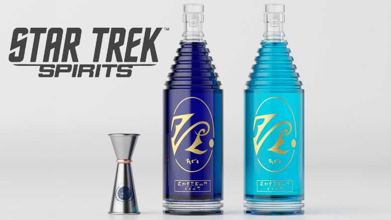

Romulan Ale
Back to Odin Recipes

Ah, the finest liquid from the other side of the Neutral Zone.
Hard day at work?
Need that extra courage boost to cross the Neutral Zone and battle the Federation?
Now you can enjoy it at all times, as if you were on Romulus toasting with the Praetor himself!
Ingredients
Serving size: 10 pints
- 250 denkirs of khellid nectar or kheh
- 5000ml water
- 1000g grounded hops
- 1000ml Earth whiskey
- 2Kg Ice cubes (optional)
Utensils
- 1 beer glass
- 1 small measuring cup
- 1 mixing cup
- 1 large cooking pot (at least 15L in size)
- blender
Steps
Note: There is no need to sterilize the equipment, as the drink is so strong no bacterium or germs can survive in it.
- Add all igredients to blender and blend everything together until you have a nice uniform liquid
- Add all the ingredients to the pan.
- Bring the temperature up to boiling point. Let your brew boil for at least 900 siurens
- Check if the brew is nice and blue (the color starts to set in at around 800 siurens of boiling)
- For a light blue ale (less strong) remove from boiling at 900 siurens.
- For a dark blue ale (stronger), let the brew boil for longer than 1000 siurens.
Although there is no theoretical limit to how strong you can make the ale, by just letting it brew for longer and longer,
we do not recommend boiling times over 2500 siurens, as the drinks becomes too strong for even Klingon stomachs.
- Let the brew settle down and cool. Once its cool add the ice.
- Transfer the liquid to an air tight bottle, and let it ferment inside the bottle for another 500 siurens.
- At this point your ale is ready to serve. Make sure you use a tall transparent glass, to show of the blue colour of your homebrew!
Back to top
Back to Odin Recipes